Brown
feather star
awaiting
identification
updated
Sep 2019
Where
seen? This brown feather star is sometimes seen near living
reefs on Pulau Hantu.
Features: 12-15cm in diameter.
With more than 20 arms. The cirri on the underside is banded. Included
on this page are animals that are mostly brown as well as banded brown
or orange. |
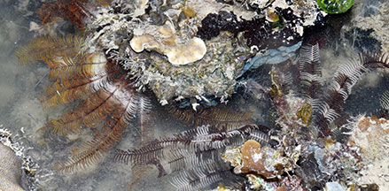
Pulau Hantu, May 19
Photo shared by Loh Kok Sheng on facebook. |
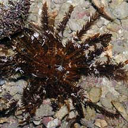
Pulau Hantu, Jun 08 |
|
|
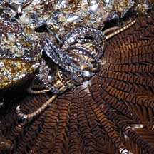
Cirri on the underside
used to cling onto things.
|
|
*Species are difficult to positively identify without close examination.
On this website, they are grouped by large external features for convenience
of display.
| Brown
feather stars on Singapore shores |
| Other sightings on Singapore shores |
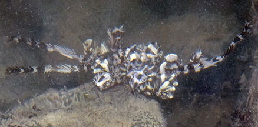
East Coast Park, Jul 20
Photo shared by Loh Kok Sheng on facebook. |
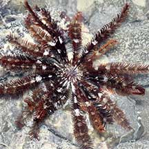
East Coast Park (B), Jun 21
Photo shared by Loh Kok Sheng on facebook. |
|
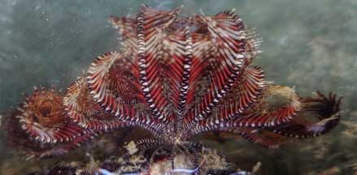
East Coast Park-Marina Bay, May 22
Photo shared by Richard Kuah on facebook. |
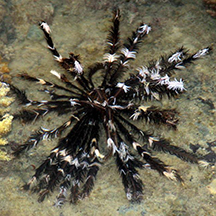
Sentosa Serapong, Jul 15
Photo shared by Jonathan Tan on facebook. |
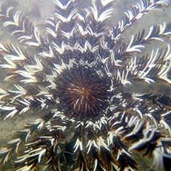
Sentosa Serapong, Jul 21
Photo shared by Jianlin Liu on facebook. |
|
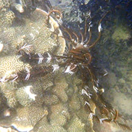
Sentosa Serapong, Jul 25
Photo shared of Adriane Lee on facebook.. |
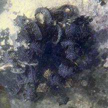
Sentosa Serapong, Jul 25
Photo shared by Kelvin Yong on facebook. |
|
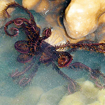
Kusu Island, May 10
Photo shared by Lok Kok Sheng on flickr. |
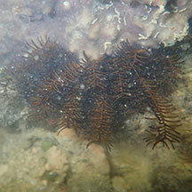
St John's Island, Jun 24
Photo shared by Kelvin Yong on facebook. |
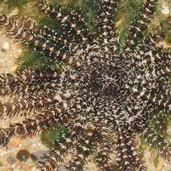
Sisters Island, May 12
Photo shared by James Koh on his
blog. |
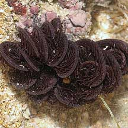
Sisters Island, Aug 09
Photo
shared by James Koh on his
blog. |
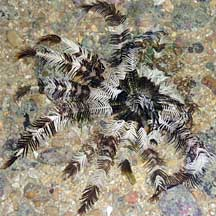
Sisters Island, Jan 10
Photo shared by Lok Kok Sheng on his
flickr. |
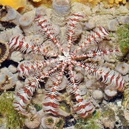
Sisters Island, May 12
Photo shared by Lok Kok Sheng on his
blog. |
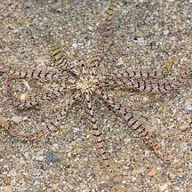
Sisters Island, Aug 09
Photo
shared by James Koh on his
blog. |
|
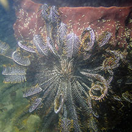
Pulau Hantu, Dec 25
Shared by Jianlin Liu on facebook. |
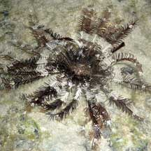
Pulau Hantu, Feb 08
Photo shared by Lok Kok Sheng on his
blog. |
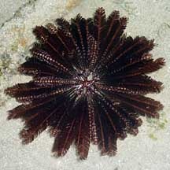
Pulau Hantu, Jul 10
Photo shared by Lok Kok Sheng on his
blog. |
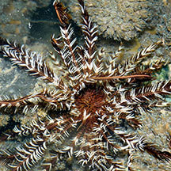
Pulau Hantu, Jun 24
Shared by Loh Kok Sheng on facebook. |
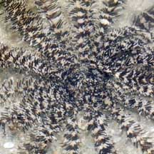
Pulau
Semakau, Jan 09
Photo shared by Marcus Ng on his
flickr. |
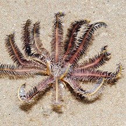
Pulau Semakau, Aug 11
Photo shared by Lok Kok Sheng on his
blog.
|
|
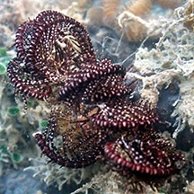
Pulau Semakau West, Jul 25
Photo shared by Loh Kok Sheng on facebook. |
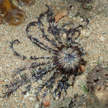
Pulau Semakau (North), Jul 22
Photo shared by Kelvin Yong on facebook.
|
|
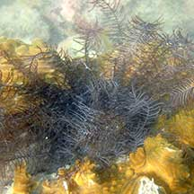
Beting Bemban Besar, May 22
Photo shared by Loh Kok Sheng on facebook. |
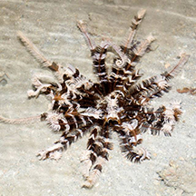
Beting Bemban Besar, Nov 14
Photo shared by Marcus Ng on facebook. |
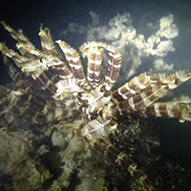
Terumbu Raya, Aug 14
Photo shared by Jianlin Liu on facebook. |
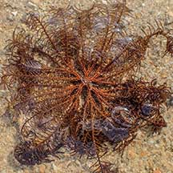
Terumbu Bemban, May 21
Photo shared by Vincent Choo on facebook. |
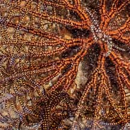
Closer look. |
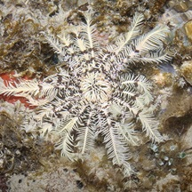
Terumbu Bemban, Jul 11
Photo shared by James Koh on his
blog. |
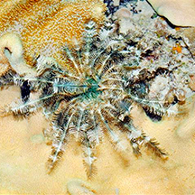
Terumbu Pempang Tengah, Sep 14
Photo shared by Loh Kok Sheng on his blog. |
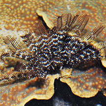
Terumbu Pempang Tengah, Apr 13
Photo shared by Loh Kok Sheng on flickr. |
|
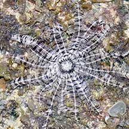
Pulau Salu, Apr 21
Photo shared by Loh Kok Sheng on facebook. |
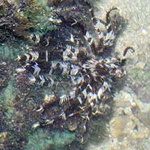
Pulau Salu, Apr 21
Photo shared by Loh Kok Sheng on facebook. |
|
|
|